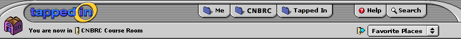

Here are some notes with images from our phone conference today. Overall, people were happy with many of the decisions we made from our meeting last week. These are mostly working out the details...
CHAT WINDOW TOPICS:
The buddy list should have subfolders for groups/courses automatically listed in addition to your edited list of people.
pm and chat: need to differentiate a bit more by space or color that one is always location-specific (chat) and one is location-independent (PM)
more language specific ways of indicating a private message in the chat text field (you PM Mark)
room name on person list not necessary on "here" tab- try a version without it
room name on person list should say "offline" on buddies list if you are unavailable (other ideas were: N/A, Away)
change "say to all" - say to room
possibly a different word for "chat" for close "chat window" like "communication window"?
TAB SUBTOPICS
There was a lot of discussion here. Subtopics work differently from tab to tab, and we decided that trying to keep things consistent across the board was a bit tricky and misleading. On "Me", for instance, subtopics are more like "favorites"- but not all of them, whereas tenant and tapped in tab are both all content-related. We also decided that files and links (like discussion) work differently between the "me" tab and the other two. Help subtopics also need to be worked out further, as they are more about functionality than content.
We came to following ideas for the various tabs:
ME:
Welcome (overview page with messages, quicklinks to any type of link)
Favorites (includes buddies, favorite places, and favorite discussions)
Courses (your courses)
Groups (your groups)
Files (your files)
Links (your Links)
Calendar (your calendar)
Settings (your preferences)
TENANT TAB:
Welcome (overview page with tenant-wide messages and selected quicklinks files and links)
People (tenant directory)
Places (tenant-related places)
Courses (tenant-specific courses)
Groups (tenant-specific groups)
Calendar (tenant-specific calendar)
TAPPED IN TAB:
Welcome (overview page with TI-wide messages and selected quicklinks to files and links)
People
Places
Courses
Groups
Calendar
HELP TAB:
Topics (an index)
Helpdesk (people you can reach directly)
FAQ
Interface (like icons, UI issues, etc.)
SEARCH:
Everything
People
Places
Courses
Groups
Files
Links
Discussion
Calendar (events)
The idea of a room "homepage" with subsequent horizontal subnav bar appearing on second-level pages worked for everyone. This image just shows the remaining topnav. Also-logout is still missing. I'll put it in the upper right after moving help and search over a bit...
